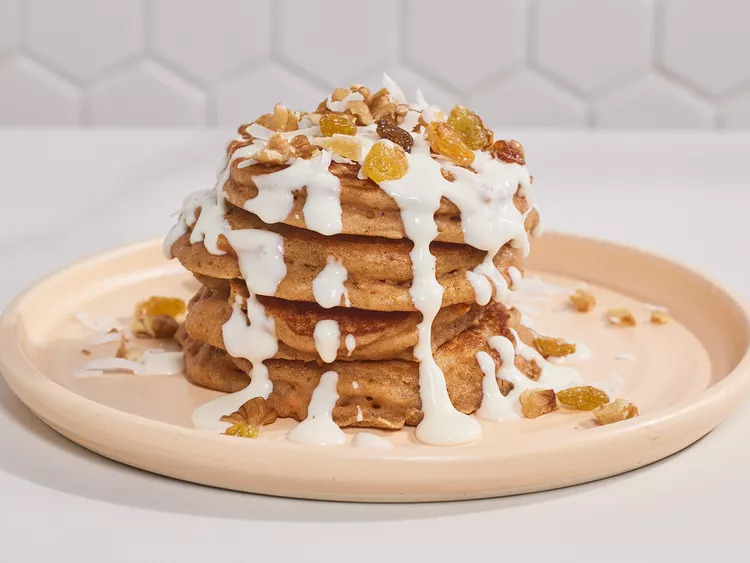

A carrot cake pancakes recipe

source: Laura Kanya
Description
The spices in these pancakes take you right to the flavors of a carrot cake. They are drizzled with a thin frosting and topped with raisins, coconut flakes, nuts, and candied ginger.
Ingredients
- 1 1/4 cups all-purpose flour
- 1 1/2 teaspoons baking powder
- 1 teaspoon ground cinnamon
- 1/2 teaspoon pumpkin pie spice
- 1/2 teaspoon baking soda
- 1/4 teaspoon table salt
- 1 cup whole buttermilk
- 1/4 cup packed light brown sugar
- 1 large egg
- 1 teaspoon vanilla extract
- 3/4 cup finely grated carrot
- 3 tablespoons unsalted butter, melted
- 3 ounces cream cheese, soft
- 1 tablespoon whole milk
- 2 tablespoons powdered sugar
- 1/2 teaspoon vanilla extract
- 3 tablespoons golden raisins
- 3 tablespoons toasted chopped nuts
- 3 tablespoons toasted unsweetened coconut flakes
- 1 tablespoon finely chopped candied ginger
Steps
- Prepare the Pancakes: Whisk together flour, baking powder, cinnamon, pumpkin pie spice, baking soda, and salt in a large bowl until combined. Add buttermilk, brown sugar, egg, and vanilla; stir until just combined. Stir in carrots and melted butter until just combined. Set aside.
- Prepare the Frosting: In a medium bowl, whisk together cream cheese, milk, powdered sugar, and vanilla until smooth. Set aside.
- Prepare the Topping: In a small bowl, stir together raisins, pecans, coconut, and ginger, if desired. Set aside.
- Heat a large nonstick skillet or griddle over medium. Grease skillet or griddle with butter.
- Working in batches, scoop 1/4 cup batter per pancake into the skillet, being sure not to overcrowd skillet. Cook until bubbles begin to form on surface of pancakes and edges look dry, 2 to 3 minutes. Flip, and cook until fluffy and slightly firm, about 1 minute. Repeat with remaining batter, adding butter and adjusting heat as needed.
- Divide pancakes evenly among 4 plates. Drizzle Pancakes evenly with Frosting, and sprinkle evenly with Topping.